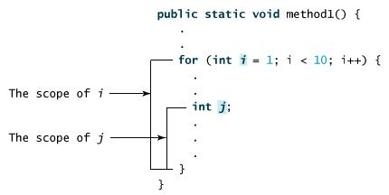

Java メソッド
これまでのいくつかの章で、私たちは頻繁に使用してきましたSystem.out.println()、それは何でしょうか？
- println() はメソッドです。
- System はシステムクラスです。
- out は標準出力オブジェクトです。
この文の使い方は、システムクラス System 内の標準出力オブジェクト out のメソッド println() を呼び出すことです。
では、メソッドとは何でしょうか？
Javaメソッドは文の集まりであり、それらが一緒になって1つの機能を実行します。
- メソッドは、ある種類の問題を解決する手順を順序立てて組み合わせたものです。
- メソッドはクラスまたはオブジェクトに含まれます。
- メソッドはプログラム内で作成され、他の場所で参照されます。
メソッドの利点
- 1. プログラムをより簡潔で明確にします。
- 2. プログラムの保守に役立ちます。
- 3. プログラム開発の効率を高めることができます。
- 4. コードの再利用性が向上します。
メソッドの命名規則
- 1. メソッド名の最初の単語は小文字で始め、後続の単語は大文字で始めます。接続文字（アンダースコアなど）は使用しません。例えば：addPerson。
- 2. アンダースコアは JUnit テストメソッド名に現れることがあり、名前の論理的な構成要素を区切るために使われます。典型的なパターンは次のとおりです：test<MethodUnderTest>_<state>、例えばtestPop_emptyStack。
メソッドの定義
一般的に、メソッドを定義するには次の構文が含まれます：
メソッドはメソッドヘッダーとメソッド本体から構成されます。以下はメソッドのすべての部分です：
- 修飾子：修飾子はオプションで、コンパイラにそのメソッドをどのように呼び出すかを指示します。このメソッドのアクセス型を定義します。
- 戻り値の型：メソッドは値を返す場合があります。returnValueType はメソッドの戻り値のデータ型です。必要な操作を実行するが戻り値を持たないメソッドもあります。この場合、returnValueType はキーワードです。void。
- メソッド名：メソッドの実際の名前です。メソッド名とパラメータリストは一緒にメソッドシグネチャを構成します。
- パラメータの型：パラメータはプレースホルダーのようなものです。メソッドが呼び出されるとき、値がパラメータに渡されます。この値は実引数または変数と呼ばれます。パラメータリストとは、メソッドのパラメータの型、順序、およびパラメータの数のことです。パラメータはオプションであり、メソッドはパラメータを一切含まなくても構いません。
- メソッド本体：メソッド本体には具体的な文が含まれ、そのメソッドの機能を定義します。

例：
パラメータは複数持つことができます：
注意：他の一部の言語では、メソッドは手続き（プロシージャ）と関数を指します。void 以外の型の戻り値を返すメソッドは関数と呼ばれ、void 型の戻り値を返すメソッドは手続きと呼ばれます。
例
次のメソッドは 2 つのパラメータ num1 と num2 を含み、これら 2 つのパラメータの最大値を返します。
より簡潔な書き方（三項演算子）：
メソッド呼び出し
Java はメソッドを呼び出す 2 つの方法をサポートしており、メソッドが値を返すかどうかに応じて選択します。
プログラムがメソッドを呼び出すとき、プログラムの制御は呼び出されたメソッドに渡されます。呼び出されたメソッドの return 文が実行されるか、メソッド本体の閉じ括弧に到達すると、制御はプログラムに返されます。
メソッドが値を返す場合、メソッド呼び出しは通常、値として扱われます。例えば：
メソッドの戻り値が void の場合、メソッド呼び出しは必ず文になります。例えば、println メソッドは void を返します。次の呼び出しは文です：
例
次の例は、メソッドを定義する方法とそれを呼び出す方法を示しています：
TestMax.java ファイルコード：
上記の例をコンパイルして実行した結果は次のとおりです：
5 和 2 比较，最大值是：5
このプログラムには main メソッドと max メソッドが含まれています。main メソッドは JVM によって呼び出されますが、それ以外は、main メソッドも他のメソッドと変わりません。
main メソッドのヘッダーは固定です。例に示すように、修飾子 public と static を持ち、void 型の値を返し、メソッド名は main で、さらに String[] 型のパラメータを 1 つ持ちます。String[] はパラメータが文字列配列であることを示します。
void キーワード
この節では、void メソッドを宣言して呼び出す方法を説明します。
次の例は、printGrade という名前のメソッドを宣言し、それを呼び出して指定された点数を出力します。
例
TestVoidMethod.java ファイルコード：
上記の例をコンパイルして実行した結果は次のとおりです：
C
ここで printGrade メソッドは void 型のメソッドであり、値を返しません。
void メソッドの呼び出しは必ず文になります。したがって、それは main メソッドの 3 行目で文として呼び出されています。セミコロンで終わる他の文と同じです。
値によるパラメータ渡し
メソッドを呼び出すときはパラメータを指定する必要があり、パラメータリストで指定された順序で提供しなければなりません。
例えば、次のメソッドはメッセージをn回連続して出力します：
TestVoidMethod.java ファイルコード：
例
次の例は、値渡しの効果を示しています。
このプログラムは、2 つの変数を交換するためのメソッドを作成します。
TestPassByValue.java ファイルコード：
上記の例をコンパイルして実行した結果は次のとおりです：
交换前 num1 的值为：1 ，num2 的值为：2 进入 swap 方法 交换前 n1 的值为：1，n2 的值：2 交换后 n1 的值为 2，n2 的值：1 交换后 num1 的值为：1 ，num2 的值为：2
2 つのパラメータを渡して swap メソッドを呼び出します。興味深いことに、メソッドが呼び出された後も、実引数の値は変更されません。
メソッドのオーバーロード
上記で使用した max メソッドは int 型のデータにのみ適用できます。しかし、2 つの浮動小数点型データの最大値を取得したい場合はどうすればよいでしょうか？
解決策は、同じ名前でパラメータが異なる別のメソッドを作成することです。次のコードのようになります：
max メソッドを呼び出すときに int 型のパラメータを渡すと、int 型パラメータの max メソッドが呼び出されます；
double 型のパラメータを渡すと、double 型の max メソッド本体が呼び出されます。これをメソッドのオーバーロードと呼びます；
つまり、1 つのクラスの 2 つのメソッドが同じ名前を持ちますが、パラメータリストが異なります。
Java コンパイラはメソッドシグネチャに基づいて、どのメソッドを呼び出すべきかを判断します。
メソッドのオーバーロードにより、プログラムはより明確で読みやすくなります。密接に関連するタスクを実行するメソッドは同じ名前を使用すべきです。
オーバーロードされたメソッドは異なるパラメータリストを持たなければなりません。修飾子または戻り値の型が異なるだけではメソッドをオーバーロードすることはできません。
変数のスコープ
変数のスコープ（有効範囲）とは、プログラム内でその変数を参照できる部分のことです。
メソッド内で定義された変数はローカル変数と呼ばれます。
ローカル変数のスコープは、宣言された場所から、それを含むブロックが終了するまでです。
ローカル変数は宣言して初めて使用できます。
メソッドのパラメータのスコープはメソッド全体に及びます。パラメータは実際にはローカル変数です。
forループの初期化部分で宣言された変数のスコープは、ループ全体に及びます。
ただし、ループ本体内で宣言された変数の有効範囲は、宣言された場所からループ本体の終わりまでです。次のような変数宣言が含まれます。

メソッド内の異なる非ネストブロックでは、同じ名前のローカル変数を複数回宣言できますが、ネストされたブロック内ではローカル変数を2回宣言することはできません。
コマンドライン引数の使用
プログラムの実行時にメッセージを渡したい場合があります。これは、コマンドライン引数をmain()関数に渡すことで実現できます。
コマンドライン引数は、プログラムの実行時にプログラム名の直後に続く情報です。
例
次のプログラムは、すべてのコマンドライン引数を出力します。
CommandLine.java ファイルコード：
次のようにして、このプログラムを実行します：
$ javac CommandLine.java $ java CommandLine this is a command line 200 -100 args[0]: this args[1]: is args[2]: a args[3]: command args[4]: line args[5]: 200 args[6]: -100
コンストラクタ
コンストラクタは、クラスのオブジェクトを作成するための特別なメソッドです。newキーワードを使用してオブジェクトを作成すると、コンストラクタが自動的に呼び出され、オブジェクトの属性を初期化します。
コンストラクタの特徴:
- メソッド名がクラス名と同じ：コンストラクタの名前はクラス名と一致している必要があります。
- 戻り値の型がない：コンストラクタには戻り値の型がなく、
voidvoidも記述できません。 - オブジェクト作成時に自動的に呼び出される：使用するたびに、
newnewでオブジェクトを作成すると、コンストラクタが自動的に呼び出されます。 - オーバーロード可能：同じクラスに複数のコンストラクタを定義できますが、これらのコンストラクタのパラメータリストは異なる必要があります（つまり、オーバーロードを構成します）。
カスタムコンストラクタを定義するかどうかに関係なく、すべてのクラスにはコンストラクタがあります。これはJavaが自動的にデフォルトコンストラクタを提供するためです。デフォルトコンストラクタのアクセス修飾子はクラスのアクセス修飾子と同じです（クラスがpublicの場合、コンストラクタもpublicです。クラスがprotectedに変更された場合、コンストラクタもprotectedに変更されます）。
独自のコンストラクタを定義すると、デフォルトコンストラクタは無効になります。
例
以下はコンストラクタを使用する例です：
次のようにコンストラクタを呼び出して、オブジェクトを初期化できます：
ConsDemo.java ファイルコード：
実行結果は次のとおりです：
10 20
詳細については次の章を参照してください：Java コンストラクタ。
可変長引数
JDK 1.5以降、Javaは同じ型の可変長引数をメソッドに渡すことをサポートしています。
メソッドの可変長引数の宣言は次のとおりです：
メソッド宣言では、指定したパラメータ型の後に省略記号（...）を追加します。
1つのメソッドで指定できる可変長引数は1つだけで、メソッドの最後のパラメータである必要があります。通常のパラメータはすべて、その前に宣言しなければなりません。
例
VarargsDemo.java ファイルコード：
上記の例のコンパイルおよび実行結果は次のとおりです：
The max value is 56.5 The max value is 3.0
finalize() メソッド
finalizeメソッドはJava 9で非推奨とされ、将来のJavaバージョンで削除される予定です。推奨されるのはtry-with-resources 或 java.lang.ref.Cleanerを使用したリソース管理です。
Javaでは、オブジェクトがガベージコレクタによって破棄（回収）される前に呼び出されるメソッドを定義できます。このメソッドはfinalize()と呼ばれ、回収されたオブジェクトをクリーンアップするために使用されます。
例えば、finalize()を使用して、オブジェクトが開いたファイルが確実に閉じられるようにすることができます。
finalize()メソッド内では、オブジェクトが破棄されるときに実行する操作を指定する必要があります。
finalize()の一般的な形式は次のとおりです：
キーワードprotectedは修飾子であり、finalize()メソッドがこのクラス以外のコードから呼び出されないことを保証します。
もちろん、Javaのメモリ回収はJVMが自動的に行うことができます。手動で使用する場合は、上記の方法を使用できます。
例
FinalizationDemo.java ファイルコード：
上記のコードを実行すると、出力結果は次のとおりです：
$ javac FinalizationDemo.java $ java FinalizationDemo Cake Object 1is created Cake Object 2is created Cake Object 3is created Cake Object 3is disposed Cake Object 2is disposed
代替案：AutoCloseableインターフェースをtry-with-resources文と組み合わせて、リソースを自動的に閉じることを推奨します。例：
try (Resource res = new Resource()) {
// 使用资源
} catch (Exception e) {
e.printStackTrace();
} その他の拡張
Lichee
442***894@qq.com
オブジェクトが作成されるとき、コンストラクタはそのオブジェクトを初期化するために使用されます。コンストラクタはそれが属するクラスと同じ名前ですが、戻り値はありません。
通常、コンストラクタはクラスのインスタンス変数に初期値を代入したり、完全なオブジェクトを作成するためのその他の必要な手順を実行したりするために使用されます。
カスタムコンストラクタを定義するかどうかに関係なく、すべてのクラスにはコンストラクタがあります。Javaが自動的にデフォルトコンストラクタを提供し、すべてのメンバーを0に初期化するためです。
独自のコンストラクタを定義すると、デフォルトコンストラクタは無効になります。
Lichee
442***894@qq.com
なるほど
aur***ys@gmai.com
オブジェクトを作成するとき、システムは自動的にコンストラクタを呼び出します
なるほど
aur***ys@gmai.com
D I R N
117***8664@qq.com
参考URL
Javaの可変長引数について：
1つの関数が持てる可変長引数は最大で1つであり、その可変長引数は最後のパラメータでなければなりません。可変長引数については、コンパイラがそれを配列に変換するため、関数内部では可変長引数名を配列名とみなすことができます。
且
これら2つのメソッドの名前は同じであるため、メソッドのオーバーロードにはなりません。
可変長引数は、関数に0個以上の引数を渡すことができます。例：
void function("Wallen","John","Smith"); void function(new String [] {"Wallen","John","Smith"});これら2つの呼び出し方法の効果は同じです。
可変長引数を持つメソッドのオーバーロードについて。
void function(String... args); void function(String args1,String args2); function("Wallen","John");固定パラメータのメソッドが優先的にマッチングされます。
D I R N
117***8664@qq.com
参考URL
李保民
141***3308@qq.com
参考URL
メソッドにおけるパラメータのバインドと変数型の理解を固める：
パラメータのバインド：呼び出し側がインスタンスメソッドにパラメータを渡すとき、呼び出し時に渡された値はパラメータの位置に一対一でバインドされます。
基本型パラメータの受け渡しの例：
public class Main { public static void main(String[] args) { Person p = new Person(); int n = 15; // n的值为15 tip:基本类型变量 p.setAge(n); // 传入n的值 tip:参数n传递的是值 System.out.println(p.getAge()); // 15 n = 20; // n的值改为20 System.out.println(p.getAge()); // 15还是20? tip:15 } } class Person { private int age; public int getAge() { return this.age; } public void setAge(int age) { this.age = age; } }基本型パラメータの受け渡しは、呼び出し側の値のコピーです。その後の双方の変更は互いに影響しません。
基本型変数：「特定の数値を保持する」、変数名は具体的な数値を指します。
参照型パラメータの受け渡しの例：
public class Main { public static void main(String[] args) { Game g = new Game(); String[] gamename = { "王者", "荣耀" }; // gamename变量指向的是这个数组的内存地址 g.setName(gamename); // 传入gamename数组 tip:传入的是内存地址 ↑ System.out.println(g.getName()); // 王者荣耀 gamename[1] = "农药"; // gamename数组的第二个元素修改为"农药" System.out.println(g.getName()); // "王者荣耀"还是"王者农药"? tip:王者农药 } } class Game { private String[] name; public String getName() { return this.name[0] + " " + this.name[1]; } public void setName(String[] name) { this.name = name; } }参照型パラメータの受け渡しでは、呼び出し側の変数と受け取り側のパラメータ変数は、同じ配列アドレス（メモリアドレス）を指しています。どちらか一方がこのオブジェクト（配列）を変更すると、相手にも影響します（同じオブジェクトを指しているため）。
参照型変数：変数名はオブジェクトのメモリアドレスを指します。
李保民
141***3308@qq.com
参考URL